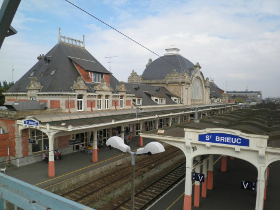
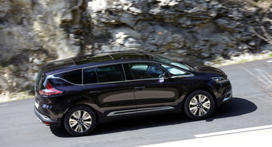

Pour nous rejoindre et venir nous entourer le jour J, plusieurs options s’offrent à vous...
Hénon se situe entre les gares de Lamballe (18 km, 23 minutes) et Saint Brieuc (22 km, 25 minutes). En arrivant de Paris, il vaut donc mieux descendre à Lamballe si le train s’y arrête.
Voici quelques options de train le samedi matin depuis Paris (gare Montparnasse) :
| Paris | Lamballe | Saint‑Brieuc | Commentaires |
|---|---|---|---|
| 8h36 | - | 11h31 | Pour les plus courageux |
| 9h03 | 12h00 | 12h13 | Idéal pour la chorale |
| 10h04 | 13h15 | 13h26 | |
| 11h04 | 14h45 | 14h18 | L'exception qui confirme la règle: ce train est direct jusque Saint-Brieuc mais il faut changer à Rennes pour descendre à Lamballe |
Pour rejoindre Hénon depuis la gare, nous vous proposons de vous signaler sur ce fichier de covoiturage (onglet: « j’arrive en train »).
Vous trouverez Hénon sans difficulté sur votre GPS. Il faut compter 4h30 de route depuis Paris.
Là encore n’hésitez pas à vous signalez sur ce fichier de covoiturage pour proposer des places (onglet : « je propose des places ») ou pour en rechercher (si vous ne trouvez pas votre bonheur dans les places déjà proposées, signalez-vous dans l’onglet « je cherche une place »).
S’il reste des places dans votre voiture en arrivant au niveau de Lamballe / Saint Brieuc, n’hésitez pas à venir à la rescousse de ceux qui nous rejoignent par le train et qui auraient bien besoin de vous pour les conduire ensuite à Hénon. Vous trouverez comment les contacter ici (onglet: « j’arrive en train »).
Catuélan est ensuite à 2,6 km de Hénon. Merci de veiller à ce que personne ne reste abandonné sur le parvis !
